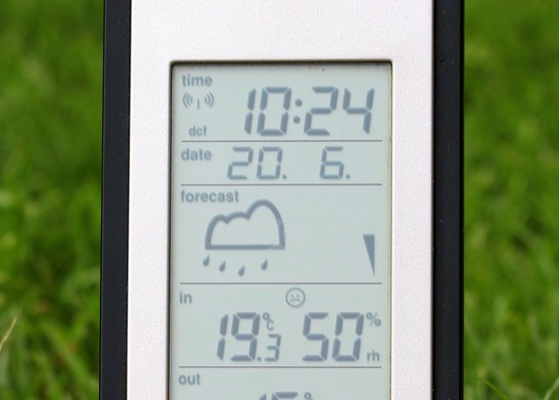

Article One
High demand for food quality and quantity has sparked a change in agriculture. Various research reports state that by 2050, globally, we will need to feed 2 billion more people without an increase of cultivatable land. They also say that over the next 40 years, the agriculture sector will need to produce more food than the industry has grown during the last 8,000 years. Thus, increasing the productivity from the existing arable land is the solution for rising food demand.
While various agri-tech solutions are available currently to increase the yield, many barriers have prevented farmers in adopting digital transformation.